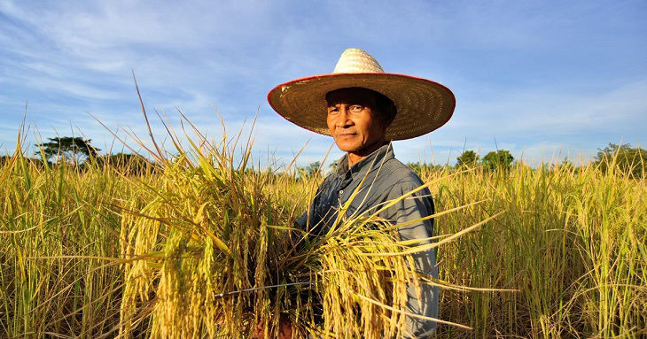

เรื่องราวของเกษตรกรผู้ไม่ยอมแพ้
ลุงสมชาย... กับการเริ่มต้นปรับวิธีดูแลแปลงของตัวเอง
เมื่อผลผลิตไม่เป็นไปตามหวังและต้นทุนเพิ่มขึ้น ลุงสมชายจึงเริ่มจดบันทึกค่าใช้จ่าย สำรวจปัญหาในแปลง และขอคำแนะนำเรื่องดินและน้ำ จากนั้นค่อย ๆ ทดลองปรับวิธีปลูกในพื้นที่เล็ก เปรียบเทียบผลที่ได้ก่อนนำไปใช้กับพื้นที่ทั้งหมด เรื่องนี้ชวนให้เห็นว่า การสังเกตและเรียนรู้จากปัญหา เป็นจุดเริ่มต้นของการพัฒนาการเกษตร
ข้อคิดจากเรื่องนี้
- ดูแลดินและใช้ปัจจัยการผลิตอย่างเหมาะสม
- ตรวจสอบสาเหตุของปัญหาก่อนลงมือแก้
- จดต้นทุนและผลผลิต เพื่อวางแผนรอบต่อไป
ดูเพิ่มเติม
เริ่มปรับจากสิ่งเล็ก ๆ ในแปลง
ลุงสมชายเริ่มจากแบ่งพื้นที่ทดลอง แล้วบันทึกวันปลูก การให้น้ำ ปัจจัยการผลิตที่ใช้ และผลที่สังเกตได้ เพื่อให้รู้ว่าการปรับแต่ละอย่างส่งผลอย่างไร
สิ่งที่นำไปปรับใช้ได้
- จดปัญหาและสิ่งที่เปลี่ยนแปลงในแปลง อย่างสม่ำเสมอ
- ทดลองวิธีใหม่ในพื้นที่เล็ก ก่อนขยายไปทั้งแปลง
- เปรียบเทียบทั้งค่าใช้จ่าย แรงงาน และผลผลิตที่ได้รับ
- ขอคำแนะนำจากเจ้าหน้าที่เกษตร เมื่อพบปัญหาที่ยังไม่ทราบสาเหตุ
แต่ละแปลงมีสภาพต่างกัน จึงควรปรับแนวทางให้เหมาะกับพื้นที่ของตนเอง